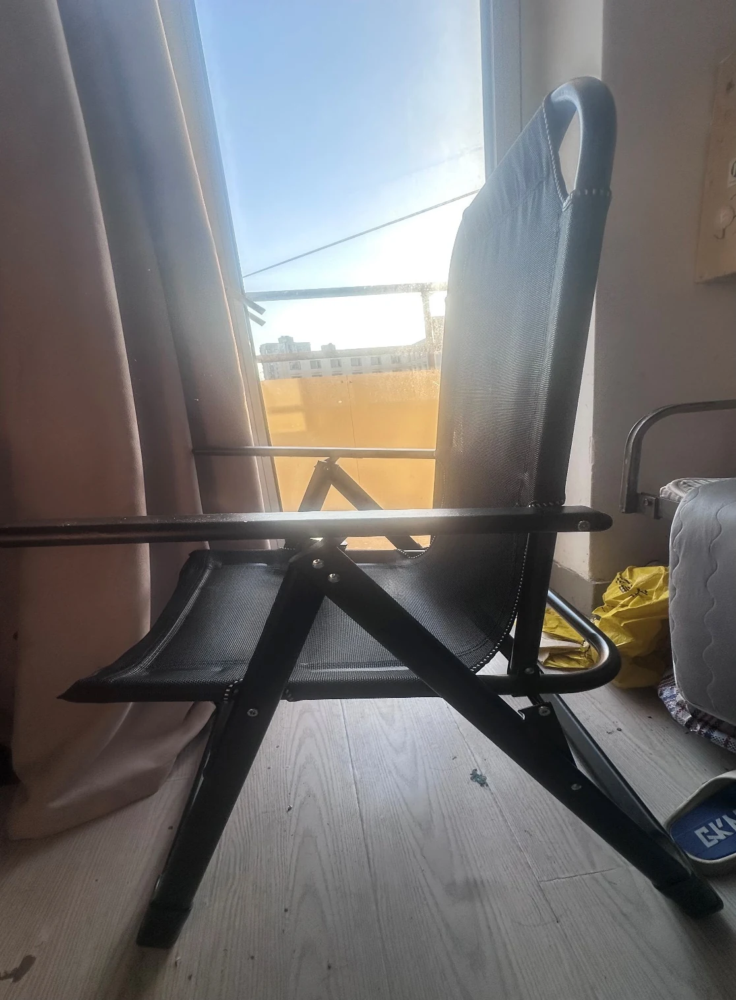
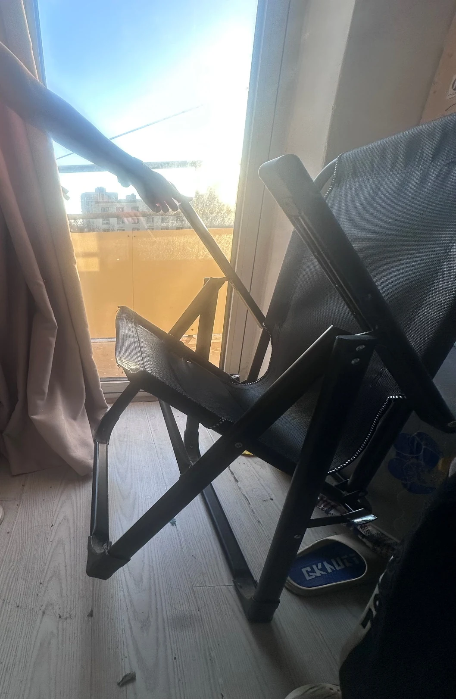
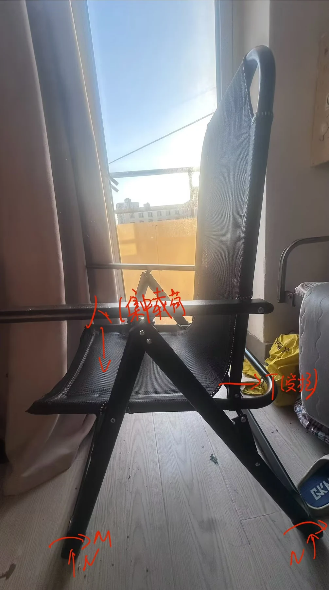
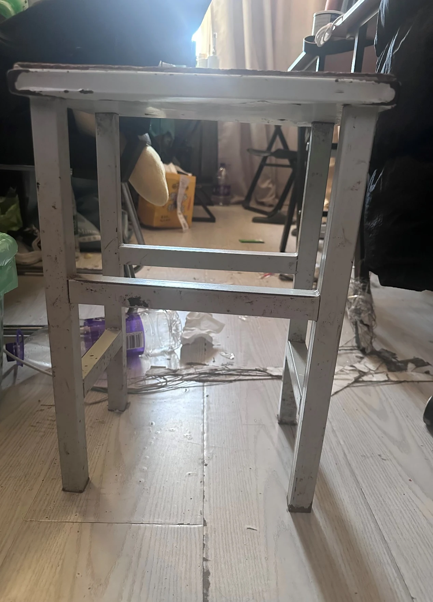

大连交通大学 · 智能建造23
我的原作生活中的力学现象与结构设计原理案例：折叠椅（X型交叉支撑折叠椅）
丁海
（1）表达力学问题（20分）
力学问题： 折叠椅在使用状态下主要承受人体竖向压力（集中荷载），通过X型交叉杆机构将力高效传递至地面，同时椅面布料承受拉力，整体结构需同时满足抗弯、抗剪、抗压（压杆稳定）、抗拉等多种


力学要求。
意义： 在极有限的材料用量和自重下，实现承载150kg以上的人体重量，同时具备可折叠收纳功能，这是典型的轻量化结构优化设计与机构+受力构件复合设计的典范。
主要影响因素：
1 交叉杆的长细比 → 决定压杆稳定承载力（欧拉临界力）
2 交叉点铆接位置（通常在杆长1/2~3/5处）→ 影响力的传递路径和内力分布
3 椅面布料预张拉程度 → 提供水平拉力，约束交叉杆向外侧滑
4 管壁厚度与材料强度 → 控制局部屈服和整体稳定
趋势： 当人坐下时，交叉杆受压并有弯曲趋势，交叉点下方两杆有向外滑移趋势，椅面布料被拉紧，形成拉压协同工作体系，属于典型的张力整合结构（Tensegrity-like）。
简化力学图示（使用状态）：
人（集中荷载P）
↓
┌────────────┐ ← 椅面布料受拉T
/ ┌──┴──┐ \
/ / \ \
/ / \ \
/ / \ \
/ / \ \
/ ×←铆接点 \ \
/ / \ \
/ / \ \
↓ ↓ ↓ ↓
地面 地面
（两根斜杆受压N + 弯矩M，布料受拉T约束外扩）
（2）生活中体现（50分）
自己拍摄照片（2张）+受力/变形标注：

（照片1：折叠状态 → 几乎完全压平，展示机构特性）
（照片2：展开使用状态）
配文说明（结合照片2）：
这把典型的家用折叠椅采用双X型交叉钢管 + 高强涤纶网布的结构形式，属于生活中最常见的张力-压力协同受力体系。
实际受力与变形分析：
1 两根主斜杆：主要受轴向压力，同时由于交叉点不是正中，存在明显偏心，受一定弯矩（压弯构件）。长细比约λ=80~100，属于中长压杆，破坏模式以整体失稳为主。
2 椅面网布：坐下时被显著拉伸（肉眼可见下凹），提供向内的水平拉力分量，阻止两根斜杆下端向外滑移，这是保证结构稳定的关键拉结构件，类似于预应力索。
3 前横管（坐人最前缘那根）：受较大负弯矩，属于典型抗弯构件，管内上部受拉、下部受压。
4 铆接点：承受很大剪力，是整个结构的“心脏”，因此通常采用钢铆钉+多层垫圈加强。
这把椅子充分体现了《材料力学》中“压弯构件”和“拉压协同工作”的概念，同时完美实现了《结构设计原理》中“用最少材料实现最大刚度与稳定”的核心思想。
（3）对照《结构设计原理》内容（30分）
本折叠椅设计可直接对应教材多个知识点：
教材知识点
折叠椅中的对应体现
设计考量
压杆稳定（欧拉公式）
两根X型斜杆为细长压杆
管径和壁厚必须使Pcr > 1.5~2倍使用荷载
拉压协同工作体系
网布提供连续拉力，钢管受压
类似张拉整体结构，布料不可太松
偏心受压构件
交叉点不在正中导致偏心
需要按压弯构件进行截面核核
抗弯构件设计
前横管最大负弯矩
管截面提供足够抗弯刚度EI和强度
节点设计
铆接点承受剪力和局部挤压
采用钢铆钉+垫圈防局部压溃
机构与受力构件结合
折叠机构本身即是主要承重构件
实现了“机构即结构”的极致轻量化
创新性补充（书中未明确提及的应用场景）：
很多同学会选雨伞、剪刀、伸缩梯，但折叠椅更特殊的地方在于：它在展开后是一个稳定的承重结构，而折叠时又完全丧失刚度变成机构，这正是《结构设计原理》中“可变结构”（deployable structure）的典型案例，在航天折叠太阳能板、临时桥梁中都有类似原理。
对照组（额外提供）：

• 普通固定四腿椅：靠4根垂直腿抗压+椅面抗弯，材料利用率低，重量大，无折叠功能。
• 折叠椅：材料用量仅为普通椅的60%，却能达到同等承载力，完美诠释了“结构效率”的概念。
结论： 这把看似普通的折叠椅，实际上是《材料力学》与《结构设计原理》的高度融合：压杆稳定 + 拉压协同 + 压弯构件 + 抗弯构件 + 节点设计 + 可变结构，几乎把教材前8章的核心考点全部浓缩在一把不到3kg的椅子里，是生活中优秀的结构设计教学案例之一。
这是一份便于网页阅读的原作视图，保留提交内容的文字、图片和基本顺序；公开页面不显示学号。